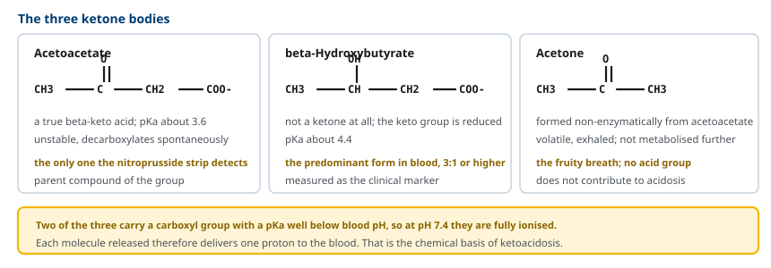
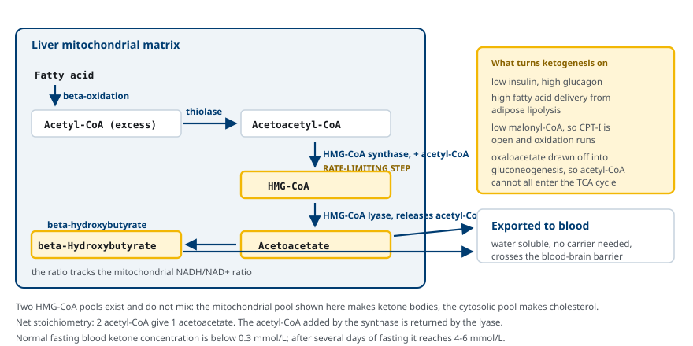
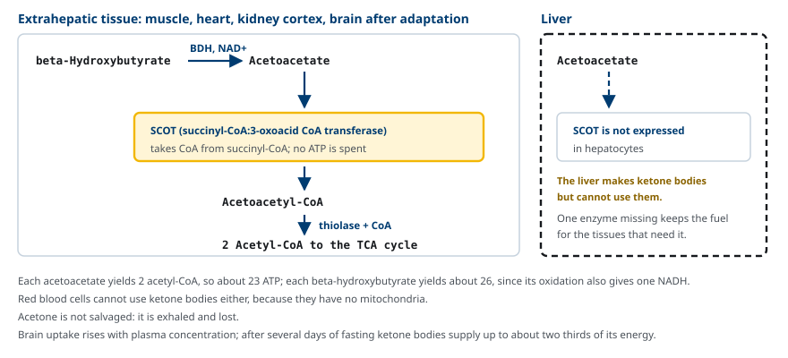
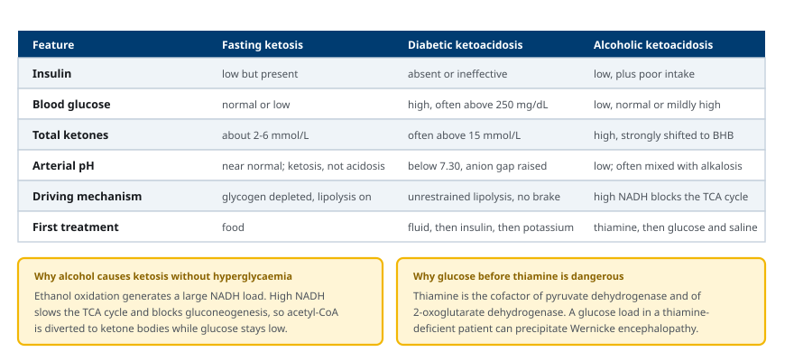
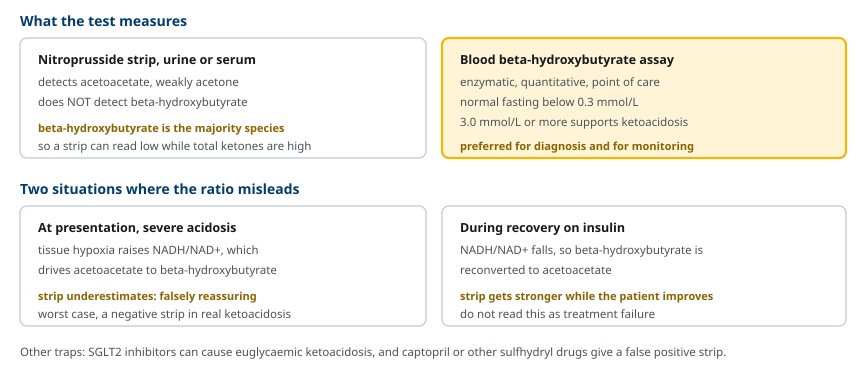

M02-W08-L02 · 대사생화학 · 지질대사
케톤체 생성·이용과 ketoacidosis
Ketone Body Synthesis, Utilisation and Ketoacidosis
학습목표
- 케톤체 세 가지의 구조와 화학적 성질을 구분하고 왜 산증을 일으키는지 설명한다.
- 간 미토콘드리아에서의 ketogenesis 경로를 효소와 함께 순서대로 설명한다.
- HMG-CoA synthase가 rate-limiting step인 이유와 ketogenesis가 켜지는 대사 조건을 설명한다.
- 말초 조직의 케톤체 이용 경로를 쓰고 간이 이용하지 못하는 이유를 효소 수준에서 설명한다.
- 공복 ketosis, 당뇨병성 ketoacidosis, 알코올성 ketoacidosis를 기전으로 구분한다.
- 케톤체 검사의 함정 세 가지를 들고 검사 결과를 해석한다.
선수지식
- M02-W07-L03 지방산 산화와 관련 대사 이상 — acetyl-CoA의 생성과 공복 연료 전환
- M02-W08-L01 Triacylglycerol 대사와 지방 동원 — 유리지방산의 간 유입
- M02-W09-L02 Cholesterol, 담즙산과 steroid 대사 — 세포질 HMG-CoA 경로와의 구분
강의 구성
- 1. 케톤체가 필요한 이유
- 2. 케톤체의 구조와 성질
- 3. Ketogenesis: 간 미토콘드리아의 경로
- 4. 말초 조직의 케톤체 이용과 간의 예외
- 5. 공복 ketosis: 정상 적응 반응
- 6. 당뇨병성 ketoacidosis
- 7. 알코올성 ketoacidosis와 그 밖의 원인
- 8. 검사 해석의 함정
1. 케톤체가 필요한 이유
공복이 길어지면 몸은 저장된 지방을 쓴다. 그런데 지방산을 그대로 모든 조직에 보낼 수는 없다. 유리지방산은 알부민에 결합한 상태로 운반되고, 이 복합체는 혈액뇌장벽을 넘지 못한다. 적혈구는 미토콘드리아가 없어 애초에 지방산을 산화할 수 없다.
문제는 뇌의 에너지 수요다. 뇌는 하루 약 120 g의 포도당을 쓴다. 공복 하루가 지나면 간의 glycogen은 거의 소진되고, gluconeogenesis만으로 이 수요를 대려면 근육 단백질을 계속 분해해 아미노산을 공급해야 한다. 그 속도로 단백질이 소모되면 수 주를 버틸 수 없다.
케톤체는 이 문제의 해답이다. 간이 지방산 산화의 산물인 acetyl-CoA를 수용성 분자로 바꾸어 혈액에 내보내면, 뇌가 이를 받아 쓸 수 있다. 결과는 두 가지다.
- 뇌가 포도당 대신 케톤체를 쓰면서 포도당 수요가 줄어든다. 장기 공복에서 케톤체가 뇌 에너지의 최대 2/3를 공급한다.
- 포도당 수요가 줄어 gluconeogenesis 부담이 줄고, 그만큼 근육 단백질이 보존된다.
케톤체 생성은 병적인 현상이 아니라 설계된 적응 반응이다. 다만 생성 속도가 이용 능력을 크게 넘으면 산증이 되어 생명을 위협한다. 이 수업은 정상 생리와 병리가 같은 경로의 양적 차이에서 갈라진다는 점을 다룬다.
2. 케톤체의 구조와 성질
케톤체는 세 가지다. 이름과 달리 셋 모두가 ketone은 아니다.
- Acetoacetate: 탄소 네 개의 beta-keto acid다. Carboxyl기의 pKa가 약 3.6이다. 경로의 모(母)화합물이다.
- beta-Hydroxybutyrate: acetoacetate의 keto기가 환원된 것이다. 엄밀히 말하면 ketone이 아니다. pKa는 약 4.4이고, 혈액에서 가장 많은 종(species)이며 보통 acetoacetate의 세 배 이상이다.
- Acetone: acetoacetate가 효소 없이 자발적으로 decarboxylation되어 생긴다. 휘발성이어서 호기로 배출되고 더 대사되지 않는다. Carboxyl기가 없으므로 산증에 기여하지 않는다.

산증이 생기는 화학적 근거가 이 구조에서 나온다. Acetoacetate와 beta-hydroxybutyrate의 pKa는 각각 3.6과 4.4로 혈액 pH 7.4보다 훨씬 낮다. 따라서 혈액에서 사실상 100% 이온화되어 있고, 한 분자가 생성될 때마다 proton 하나가 혈액에 더해진다. 이 proton이 bicarbonate를 소모하며, 음이온인 케톤체가 혈액에 남으므로 anion gap이 증가하는 대사성 산증이 된다.
케톤체의 두 번째 중요한 성질은 수용성이다. 그래서 운반 단백질이 필요 없고 혈액에 녹아 이동하며, monocarboxylate transporter(MCT)를 통해 혈액뇌장벽을 넘는다. 유리지방산이 할 수 없는 일이 이것이다.
| 구분 | 유리지방산 | 케톤체 |
|---|---|---|
| 용해도 | 거의 녹지 않음 | 수용성 |
| 운반 | 알부민 결합 | 유리 상태 |
| 혈액뇌장벽 | 통과하지 못한다 | 통과한다 |
| 산-염기 영향 | 거의 없음 | 산증을 일으킨다 |
| 소변 배출 | 없음 | 배출되어 삼투성 소실을 일으킨다 |
3. Ketogenesis: 간 미토콘드리아의 경로
케톤체는 간세포의 미토콘드리아 기질에서만 의미 있는 양으로 만들어진다. 기질은 지방산 산화에서 나온 acetyl-CoA다.
반응은 네 단계다.
1. Thiolase가 acetyl-CoA 두 분자를 합쳐 acetoacetyl-CoA를 만든다. 산화 경로 마지막 반응의 역방향이다. 2. HMG-CoA synthase가 acetyl-CoA 한 분자를 더해 HMG-CoA(3-hydroxy-3-methylglutaryl-CoA)를 만든다. 이 반응이 rate-limiting step이다. 3. HMG-CoA lyase가 HMG-CoA를 갈라 acetoacetate와 acetyl-CoA를 내놓는다. 2단계에서 더한 acetyl-CoA가 여기서 돌아온다. 4. beta-Hydroxybutyrate dehydrogenase가 NADH를 써서 acetoacetate를 beta-hydroxybutyrate로 환원한다. 이 반응은 가역이고 평형이 미토콘드리아의 NADH/NAD⁺ 비로 정해진다.
정미 수지는 acetyl-CoA 두 분자가 acetoacetate 한 분자가 되는 것이다.

HMG-CoA의 두 풀을 구분하는 것이 중요하다. 같은 분자가 cholesterol 합성의 중간체이기도 하지만, 두 경로는 세포 내 위치로 분리되어 있다.
| 구분 | 케톤체 합성 | Cholesterol 합성 |
|---|---|---|
| 위치 | 미토콘드리아 기질 | 세포질과 ER |
| HMG-CoA synthase | 미토콘드리아 동위효소(HMGCS2) | 세포질 동위효소(HMGCS1) |
| 다음 효소 | HMG-CoA lyase | HMG-CoA reductase |
| 조직 | 간(과 소량의 신장) | 거의 모든 조직 |
두 풀은 섞이지 않으므로 서로 독립적으로 조절된다. 구획화가 대사 경로를 분리하는 전형적인 예다.
Ketogenesis가 켜지는 조건은 네 가지가 겹친다.
- Insulin이 낮고 glucagon이 높다: 지방조직에서 HSL이 작동해 유리지방산이 간으로 밀려온다.
- Malonyl-CoA가 낮다: ACC가 꺼져 있어 CPT-I 억제가 풀리고 지방산 산화가 돈다.
- Acetyl-CoA가 과잉이다: 산화 속도가 TCA cycle의 처리 능력을 넘는다.
- Oxaloacetate가 부족하다: gluconeogenesis가 oxaloacetate를 끌어가므로 acetyl-CoA가 citrate로 들어갈 자리가 줄어든다.
마지막 조건이 흔히 간과된다. Acetyl-CoA가 TCA cycle로 들어가려면 oxaloacetate가 있어야 한다. 공복에서 간은 포도당을 만들기 위해 oxaloacetate를 phosphoenolpyruvate로 빼내므로, 남은 acetyl-CoA는 ketogenesis로 흐른다. 포도당을 만드는 일과 케톤체를 만드는 일이 같은 조건에서 함께 일어나는 이유가 여기에 있다.
4. 말초 조직의 케톤체 이용과 간의 예외
혈액으로 나온 케톤체는 심장근육, 골격근, 신장 피질에서 쓰이고, 적응이 일어난 뒤에는 뇌에서도 쓰인다. 이용 경로는 세 단계다.
1. beta-Hydroxybutyrate dehydrogenase가 NAD⁺를 써서 beta-hydroxybutyrate를 acetoacetate로 산화한다. 2. SCOT(succinyl-CoA:3-oxoacid CoA transferase, 또는 thiophorase)이 succinyl-CoA에서 CoA를 가져와 acetoacetate에 붙여 acetoacetyl-CoA를 만든다. ATP를 쓰지 않는다. 3. Thiolase가 CoA를 더해 acetyl-CoA 두 분자로 가르고, 이들이 TCA cycle로 들어간다.

간이 케톤체를 쓰지 못하는 이유는 SCOT이 없기 때문이다. 간세포는 ketogenesis의 모든 효소를 갖추고 있으면서 이용에 필요한 SCOT 하나를 발현하지 않는다. 그 결과 간이 만든 케톤체는 간에서 소모되지 않고 전부 혈액으로 나가 다른 조직에 공급된다. 효소 하나의 조직별 발현 차이가 기관 사이의 연료 분업을 만든다.
적혈구도 케톤체를 쓰지 못한다. 이유는 다르다. 미토콘드리아가 없어 TCA cycle 자체가 없다.
에너지 수득은 작지 않다. Acetoacetate 한 분자는 acetyl-CoA 두 개를 내므로 약 23 ATP에 해당하고, beta-hydroxybutyrate는 산화 단계에서 NADH를 하나 더 내므로 약 26 ATP에 해당한다. Acetone은 회수되지 않고 호기로 손실된다.
뇌의 적응에는 시간이 걸린다. 케톤체 수송체와 이용 효소의 발현이 늘어나야 하므로, 공복 2~3일이 지나면서 이용이 본격화된다. 공복 수 일 후 혈중 총 케톤체는 4~6 mmol/L에 이르고 뇌 에너지의 2/3까지 공급한다. 다만 뇌가 포도당을 완전히 대체하지는 못하므로 하루 약 40 g의 포도당은 계속 필요하다.
5. 공복 ketosis: 정상 적응 반응
케톤체가 생성되는 가장 흔한 상황은 정상적인 공복이다. 시간에 따라 다음과 같이 진행된다.
- 12~24시간: 간 glycogen이 소진되고 gluconeogenesis가 포도당 공급을 맡는다. 지방 분해가 시작되고 간의 지방산 산화가 올라간다. 혈중 케톤체는 0.1~1 mmol/L 수준이다.
- 2~3일: Ketogenesis가 본격화하고 케톤체가 1~3 mmol/L에 이른다. 뇌의 케톤체 이용 능력이 올라간다.
- 1주 이후: 케톤체가 4~6 mmol/L에 안정화된다. 뇌가 케톤체를 주 연료로 쓰면서 포도당 수요가 줄고 단백질 분해가 억제된다.
정상 공복에서는 혈액 pH가 크게 떨어지지 않는다. 이유는 세 가지다.
- Insulin이 완전히 없지는 않다. 낮은 농도의 insulin이 남아 지방 분해에 제동을 걸므로 유리지방산 공급이 무한정 늘지 않는다.
- 말초 조직의 이용 능력이 함께 올라간다.
- 신장이 케톤체를 배출하고 bicarbonate를 재생하는 보상이 작동한다.
그래서 공복에서 일어나는 것은 ketosis이지 ketoacidosis가 아니다. 둘을 구분하는 기준은 케톤체의 절대 농도와 pH다. 생성과 이용·배출의 균형이 유지되면 ketosis, 생성이 압도하면 ketoacidosis다.
고지방·저탄수화물 식이(ketogenic diet)는 같은 생리를 식사로 유도한다. 약물 치료에 반응하지 않는 소아 뇌전증에서 발작 빈도를 줄이는 치료로 쓰이며, 효과 기전은 완전히 밝혀지지 않았으나 뇌의 연료 전환과 신경 흥분성 변화가 관련된다고 설명된다. 부작용으로 성장 지연, 신결석, 이상지질혈증, 변비가 보고된다.
6. 당뇨병성 ketoacidosis
당뇨병성 ketoacidosis(diabetic ketoacidosis, DKA)는 같은 경로가 제동 없이 작동할 때 생긴다. 공복 ketosis와의 결정적 차이는 insulin이 완전히 없거나 전혀 작용하지 않는다는 점이다.
연쇄는 다음과 같다.
1. Insulin이 없으면 HSL 억제가 풀려 지방 분해가 최대로 진행되고 유리지방산이 간으로 쏟아져 들어온다. 2. Glucagon이 올라가 malonyl-CoA가 낮게 유지되므로 CPT-I이 열린 상태로 고정된다. 지방산 산화가 멈추지 않는다. 3. 동시에 gluconeogenesis가 억제되지 않아 고혈당이 함께 나타난다. 흔히 250 mg/dL(13.9 mmol/L) 이상이다. 4. Acetyl-CoA 과잉과 oxaloacetate 소모가 겹쳐 ketogenesis가 폭주한다. 총 케톤체가 15 mmol/L을 넘는 경우가 흔하다.
진단 기준은 세 요소의 조합이다. 고혈당(보통 250 mg/dL 이상), 혈중 beta-hydroxybutyrate 3.0 mmol/L 이상 또는 케톤 검사 강양성, 그리고 anion gap이 증가한 대사성 산증(정맥 pH 7.3 미만, bicarbonate 18 mmol/L 미만)이다.
고혈당과 케톤체의 삼투성 소실로 탈수가 심하다. 성인 환자의 평균 수분 결손은 5~7 L 수준이고, 이 탈수가 신기능을 떨어뜨려 산증을 더 악화시킨다.
Potassium의 함정이 임상에서 가장 중요하다. 산증과 insulin 부족으로 potassium이 세포 밖으로 나오므로 측정된 혈중 potassium은 정상이나 높게 나타난다. 그러나 소변으로 대량 소실되어 전신 총 potassium은 심하게 부족하다. Insulin을 투여하면 potassium이 세포 안으로 들어가 혈중 농도가 급격히 떨어져 치명적 부정맥을 일으킬 수 있다.
치료 순서가 이 병태생리에서 나온다.
1. 수분과 전해질을 먼저 보충한다. 생리식염수로 순환 혈액량을 회복한다. 2. Insulin을 지속 정주한다. 지방 분해를 끄는 것이 치료의 본질이다. 고혈당 교정이 아니라 ketogenesis 차단이 목표다. 3. Potassium을 보충한다. 혈중 농도가 5.2 mmol/L 미만이고 소변이 나오면 insulin과 함께 시작한다. 4. Bicarbonate는 일반적으로 쓰지 않는다. pH 6.9 미만의 극단적 경우에만 고려한다. Insulin으로 ketogenesis를 멈추면 축적된 케톤체가 산화되며 bicarbonate가 재생되기 때문이다. 5. 혈당이 200 mg/dL 수준으로 내려가도 insulin을 중단하지 않고 포도당을 함께 투여한다. 산증이 교정될 때까지 insulin이 필요하다.

7. 알코올성 ketoacidosis와 그 밖의 원인
알코올성 ketoacidosis는 기전이 다르다. 핵심은 NADH 과잉이다.
Ethanol은 alcohol dehydrogenase와 acetaldehyde dehydrogenase를 거쳐 acetate가 되며, 두 반응 모두 NAD⁺를 NADH로 환원한다. 다량 섭취 시 간세포의 NADH/NAD⁺ 비가 크게 올라가고, 다음 결과가 겹친다.
- TCA cycle이 느려진다. Isocitrate dehydrogenase와 2-oxoglutarate dehydrogenase가 NADH에 억제되므로 acetyl-CoA가 처리되지 않고 ketogenesis로 흐른다.
- gluconeogenesis가 막힌다. 높은 NADH가 pyruvate를 lactate로, oxaloacetate를 malate로 기울여 당 생성 기질을 빼앗는다. 그래서 저혈당이 올 수 있다.
- beta-hydroxybutyrate 쪽으로 심하게 기운다. NADH/NAD⁺ 비가 높으므로 acetoacetate가 환원된 형태로 존재한다.
여기에 식사 부족과 구토가 겹치면 glycogen도 없고 insulin도 낮아 지방 분해가 가속된다. 그 결과 혈당은 낮거나 정상인데 케톤체는 높은 양상이 나타나고, 구토로 인한 대사성 알칼리증이 섞여 산-염기 소견이 복잡해진다.
치료에서 thiamine을 포도당보다 먼저 투여하는 것이 원칙이다. Thiamine은 pyruvate dehydrogenase와 2-oxoglutarate dehydrogenase의 보조인자이며, 만성 알코올 사용 환자는 thiamine이 부족하다. 결핍 상태에서 포도당을 부하하면 Wernicke 뇌증을 유발할 수 있다. 이후 포도당과 생리식염수를 투여하면 insulin 분비가 올라가 지방 분해가 멈추고 ketosis가 해소된다.
그 밖의 원인도 알아둔다.
- SGLT2 억제제를 쓰는 환자에서는 혈당이 거의 정상인 상태로 ketoacidosis가 올 수 있다(euglycemic ketoacidosis). 소변 포도당 배출로 혈당이 가려지므로 혈당만 보고 배제하면 놓친다.
- 임신 후반기는 공복 시 ketogenesis가 빠르게 진행되어 상대적으로 낮은 혈당에서도 ketoacidosis가 생길 수 있다.
- 소아의 공복 ketotic hypoglycemia는 간 glycogen이 적고 상대적 뇌 용적이 커서 생기는 생리적 취약성에 기인한다.
8. 검사 해석의 함정
케톤체 검사는 무엇을 재는지에 따라 결과가 크게 달라진다.
(1) Nitroprusside 시험지는 acetoacetate만 검출한다.
소변과 혈청의 전통적 ketone 검사(nitroprusside 반응)는 acetoacetate에 반응하고 acetone에 약하게 반응하며, beta-hydroxybutyrate는 전혀 검출하지 않는다. 그런데 혈액에서 가장 많은 종은 beta-hydroxybutyrate다. 따라서 총 케톤체가 높아도 검사 결과가 약하게 나올 수 있다.
(2) 비율은 NADH/NAD⁺에 따라 움직이므로 두 방향으로 오해를 만든다.
- 내원 시: 심한 산증과 조직 저산소증에서 NADH/NAD⁺ 비가 올라가 acetoacetate가 beta-hydroxybutyrate로 기운다. 시험지는 실제보다 낮게 나오고, 극단적으로는 음성에 가깝게 나올 수 있다. 위험을 과소평가하게 만드는 함정이다.
- 치료 중: Insulin을 투여해 상태가 좋아지면 NADH/NAD⁺가 떨어지고 beta-hydroxybutyrate가 acetoacetate로 되돌아간다. 시험지 반응이 오히려 강해진다. 이를 치료 실패로 오해해서는 안 된다.
따라서 진단과 경과 추적에는 혈중 beta-hydroxybutyrate 정량을 쓴다. 정상 공복 농도는 0.3 mmol/L 미만이고, 3.0 mmol/L 이상이면 ketoacidosis를 지지한다.

(3) 위양성과 교란 요인
Captopril처럼 sulfhydryl기를 가진 약물은 nitroprusside 반응에서 위양성을 만든다. 반대로 시험지를 공기에 오래 노출하면 위음성이 된다.
anion gap 해석도 함께 정리한다. Ketoacidosis에서 anion gap이 증가하는 것은 bicarbonate를 소모한 자리에 케톤체 음이온이 남기 때문이다. 치료로 케톤체가 산화되면 bicarbonate가 재생되어 gap이 닫힌다. 다만 생리식염수를 대량 투여하면 chloride가 올라가 gap이 정상인 고chloride성 산증이 남을 수 있는데, 이는 회복 과정의 소견이며 ketogenesis가 계속되는 것과 구분해야 한다.
확인 문항
간은 케톤체를 만드는 유일한 기관이면서 자신이 만든 케톤체를 쓰지 못한다. 그 생화학적 이유와 생리적 의미를 설명하라.
해설
말초 조직에서 케톤체를 쓰려면 acetoacetate를 acetoacetyl-CoA로 활성화해야 하며, 이 반응을 succinyl-CoA에서 CoA를 옮겨 오는 SCOT(succinyl-CoA:3-oxoacid CoA transferase)이 담당한다. 간세포는 ketogenesis의 모든 효소를 갖추고 있으나 SCOT을 발현하지 않으므로 이 활성화 단계를 수행할 수 없다. 생리적 의미는 분업이다. 간이 만든 케톤체는 간에서 소모되지 않고 전부 혈액으로 나가 뇌, 심장, 근육, 신장 피질에 공급된다. 효소 하나의 조직별 발현 차이가 기관 사이의 연료 공급 관계를 만드는 예다.
당뇨병성 ketoacidosis 환자에서 내원 시 혈중 potassium이 5.0 mmol/L로 정상 범위였다. 이 값을 어떻게 해석하고 치료에서 무엇을 주의해야 하는가.
해설
산증과 insulin 부족은 potassium을 세포 밖으로 이동시키므로 혈중 농도는 정상이나 높게 측정된다. 그러나 고혈당과 케톤체의 삼투성 소실로 소변으로 대량 배출되어 전신 총 potassium은 심하게 부족한 상태다. 따라서 정상 범위의 측정값은 실제로는 결핍을 의미한다. Insulin을 투여하면 potassium이 세포 안으로 들어가고 산증이 교정되면서 혈중 농도가 급격히 떨어져 치명적 부정맥을 일으킬 수 있다. 그래서 혈중 potassium이 5.2 mmol/L 미만이고 소변이 나오는 것을 확인한 뒤 insulin과 함께 potassium 보충을 시작하고, 이후 자주 재측정한다.
치료를 시작한 뒤 소변 ketone 시험지 반응이 오히려 강해졌다. 환자 상태는 좋아지고 있다. 이 소견을 설명하라.
해설
Nitroprusside 시험지는 acetoacetate를 검출하고 beta-hydroxybutyrate는 검출하지 못한다. 두 분자의 비율은 미토콘드리아 NADH/NAD⁺ 비에 따라 정해진다. 내원 시에는 심한 산증과 조직 저산소증으로 NADH/NAD⁺가 높아 대부분이 beta-hydroxybutyrate 형태로 존재했으므로 시험지 반응이 실제 총량보다 약했다. Insulin과 수분 보충으로 상태가 개선되면 NADH/NAD⁺가 떨어지고 beta-hydroxybutyrate가 acetoacetate로 되돌아가므로 시험지 반응이 강해진다. 즉 반응 강화는 악화가 아니라 회복의 소견이다. 경과 추적에는 혈중 beta-hydroxybutyrate 정량과 anion gap, bicarbonate를 쓴다.
알코올성 ketoacidosis에서 혈당이 높지 않은 이유를 ethanol 대사로 설명하고, 왜 포도당보다 thiamine을 먼저 투여하는지 서술하라.
해설
Ethanol은 alcohol dehydrogenase와 acetaldehyde dehydrogenase 반응을 거치며 NAD⁺를 NADH로 환원하므로 간세포의 NADH/NAD⁺ 비가 크게 올라간다. 높은 NADH는 pyruvate를 lactate로, oxaloacetate를 malate로 기울여 gluconeogenesis의 기질을 빼앗고, TCA cycle의 NAD⁺ 의존 효소들도 억제한다. 그 결과 당 생성이 막혀 혈당이 낮거나 정상인 상태에서 acetyl-CoA가 ketogenesis로 흘러 케톤체만 올라간다. Thiamine은 pyruvate dehydrogenase와 2-oxoglutarate dehydrogenase의 보조인자이고 만성 알코올 사용 환자는 결핍되어 있다. 결핍 상태에서 포도당을 부하하면 남은 thiamine이 소모되어 Wernicke 뇌증을 유발할 수 있으므로 thiamine을 먼저 투여한다.
공복 2일째인 건강한 사람과 당뇨병성 ketoacidosis 환자는 모두 케톤체를 만든다. 두 상태를 가르는 생화학적 차이를 세 가지로 설명하라.
해설
첫째, insulin의 유무다. 공복에서는 insulin이 낮지만 남아 있어 지방 분해에 제동을 걸므로 간으로 들어오는 유리지방산이 무한정 늘지 않는다. DKA에서는 insulin이 없거나 작용하지 못해 지방 분해가 최대로 진행된다. 둘째, 혈당의 방향이 반대다. 공복에서는 포도당이 소모되어 정상이거나 낮지만, DKA에서는 gluconeogenesis가 억제되지 않아 고혈당이 동반된다. 셋째, 양적 균형이 다르다. 공복에서는 케톤체가 2~6 mmol/L에서 안정되고 말초 이용과 신장 배출이 생성을 따라가므로 pH가 거의 정상으로 유지된다. DKA에서는 15 mmol/L을 넘는 생성이 이용과 배출을 압도해 bicarbonate가 소모되고 anion gap이 증가한 대사성 산증이 된다. 결론적으로 둘은 서로 다른 경로가 아니라 같은 경로에서 제동 장치의 유무가 만든 양적 차이다.
HMG-CoA lyase 결핍과 SCOT 결핍은 둘 다 케톤체 대사의 유전적 결함이다. 공복 시 혈중 케톤체가 어떻게 달라지며 그 이유는 무엇인가.
해설
두 질환은 경로의 반대쪽 끝이 막힌 것이므로 케톤체 농도가 정반대로 움직인다. HMG-CoA lyase 결핍은 생성 경로의 마지막 합성 단계가 막혀 acetoacetate를 만들 수 없으므로, 공복에서 지방 분해와 지방산 산화가 진행되어도 케톤체가 올라가지 않는 저케톤성 저혈당이 나타난다. 이 효소는 leucine 분해의 마지막 단계도 담당하므로 소변에서 3-hydroxy-3-methylglutarate와 3-methylglutaconate가 검출되어 진단에 쓰인다. SCOT 결핍은 말초의 이용 단계가 막힌 것이므로 생성은 정상이지만 소비되지 않아 공복이나 감염에서 심한 ketoacidosis가 반복되고, 식사 후에도 케톤체가 완전히 떨어지지 않는 지속적 ketosis를 보인다.
참고문헌
- Ferrier DR (ed). Lippincott Illustrated Reviews: Biochemistry. Chapter 16, Fatty Acid, Ketone Body, and Triacylglycerol Metabolism.
- Laffel L. Ketone bodies: a review of physiology, pathophysiology and application of monitoring to diabetes. Diabetes Metab Res Rev 1999;15:412–426.
- Puchalska P, Crawford PA. Multi-dimensional roles of ketone bodies in fuel metabolism, signaling, and therapeutics. Cell Metab 2017;25:262–284.
- Cahill GF Jr. Fuel metabolism in starvation. Annu Rev Nutr 2006;26:1–22.
- Kitabchi AE et al. Hyperglycemic crises in adult patients with diabetes. Diabetes Care 2009;32:1335–1343.
- Mitchell GA et al. Medical aspects of ketone body metabolism. Clin Invest Med 1995;18:193–216.